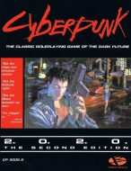

|  | Fiche technique |
| Jeu de rôles complet (2ème édition de Cyberpunk 2013), édité par Talsorian Games (1990), diffusé en français par Oriflam | |
| Langue | Français |
| Thème | Jeu de rôles se déroulant au début d'un XXIème siècle technologique, décadent et sombre |
| Qualité du background | 2 / 5 |
| Qualité des scénarii | 1 / 5 |
| Qualité des règles | 3 / 5 |
| Qualité des illustrations | 2 / 5 |
| Qualité de l'écriture | 1 / 5 |
Dans un 21ème siècle décadent, corrompu, et technologique, les personnages louent leur talent pour survivre. L'univers est violent et glauque et nécessite souvent que les personnages le deviennent pour y survivre. Ce jeu qui est la suite de Cyberpunk 2013 a le mérite d'être le premier du genre à avoir vu le jour (concurrents : Cyberspace, Shadowrun, GURPS Cyberpunk). Ceci n'excuse malheureusement pas sa piètre qualité générale, encore aggravée par une traduction lamentable, une maquette laide, et des fautes de mise en page et de français trop répétitives pour être pardonnables. Outre le fait de proposer un univers manichéen et superficiel, les règles louchent ouvertement vers AD&D avec un système de classe contraignant et irréaliste. Quant aux bribes de scenarii suggérés dans le livre, ils n'arrivent pas à la hauteur d'une série télévisée bas de gamme en ne proposant que des intrigues basiques ponctuées de combats à l'arme à feu. Il faudra malheureusement attendre des suppléments pour que Cyberpunk trouve un réel intérêt de jeu.
{kind=link}